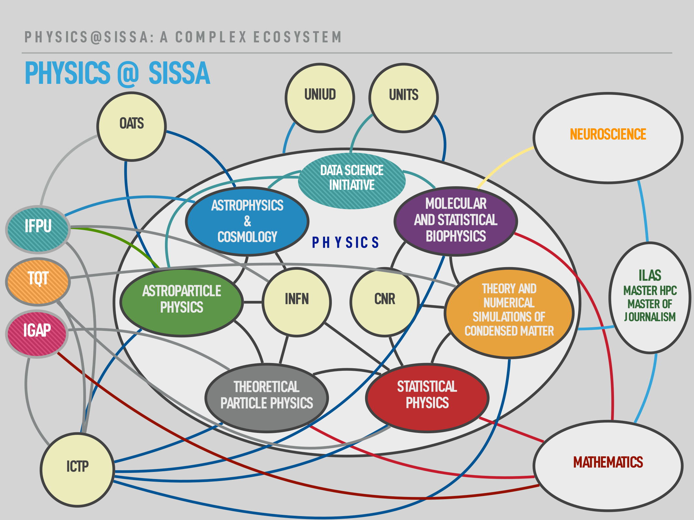
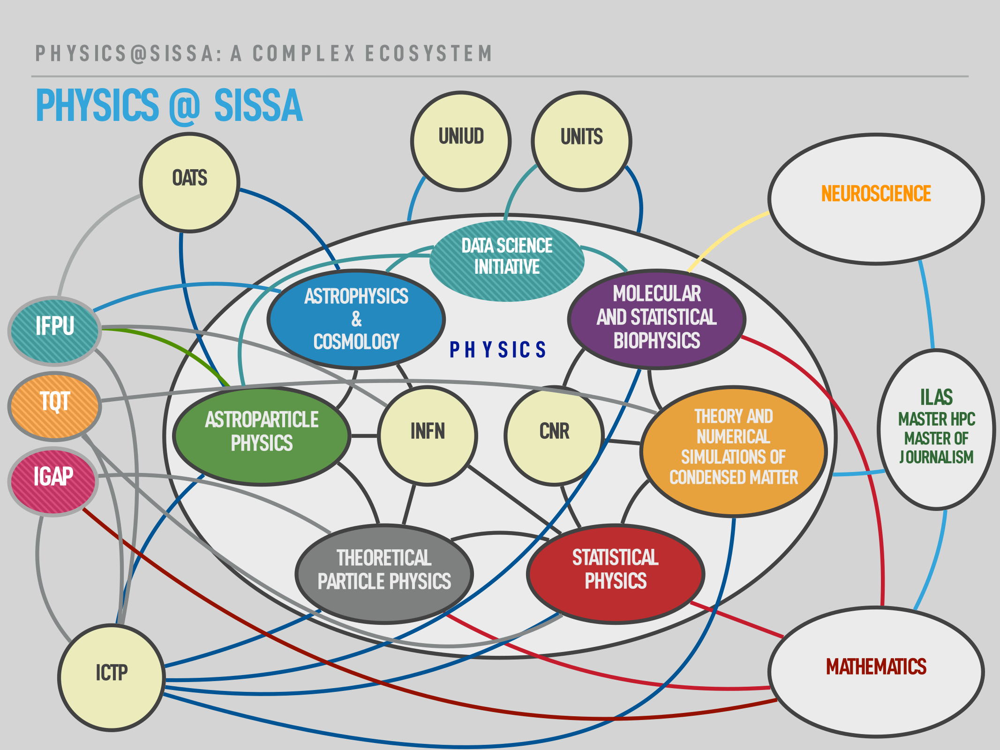

Teaching Offer
Scientific Secretariat
42 faculty members, 41 postdocs, 20 researchers, 131 PhD students, and infinite interacting possibilities
Teaching Offer
Scientific Secretariat
42 faculty members, 41 postdocs, 20 researchers, 131 PhD students, and infinite interacting possibilities
Coordinator: Stefano Liberati
Vicecoordinator: Stefano De Gironcoli
Faculty Senate Representatives:
Admin. Board of Directors rappresentatives:
Ph.D. Course Coordinators:
Giulio Bonelli (TPP)
Andrea Lapi (APC)
Giovanni Bussi (SBP)
Andrea Gambassi (SP)
Giuseppe Santoro (CM)
Matteo Viel (APP)
Research fellowship holder Representative: Sophie Renner
Students' Representatives:
Kevin Wolz (APC)
Alessandro Granelli (APP)
Nicola Calonaci (SBP)
Alessandro Galvani (FS)
Fabio Caleffi (CM)
Saman Soltani (TPP)
Research
Library Representatives:
| Name | Year | Supervisor | Thesis | Position | Curriculum |
|---|---|---|---|---|---|
| Paola Ruggiero | 2019 | Pasquale Calabrese | Entanglement and correlations in one-dimensional quantum many-body systems | Postdoc at University of Geneva, Switzerland | sp |
| Riccardo Ben Alì Zinati | 2019 | Andrea Gambassi, Alessandro Codello |
Universality: from discrete symmetry models to active matter systems | Postdoc at Sorbonne Université, Paris, France | sp |
| Jacopo Sisti | 2019 | Erik Tonni | Shape Dependence of Holographic Entanglement Entropy in AdS/BCFT and in Hyperscaling Violating Spacetimes | Postdoc at University of Southampton, UK | sp |
| Márton Mestyán | 2019 | Pasquale Calabrese | Relaxation phenomena in isolated integrable quantum systems | Postdoc at University of Ljubljana, Slovenia | sp |
| Paolo Mazza | 2019 | Andrea Gambassi | Non-equilibrium dynamics in one-dimensional constrained quantum statistical systems | Postdoc at University of Tübingen, Germany | sp |
| Alessio Lerose | 2019 | Andrea Gambassi, Alessandro Silva |
Nonequilibrium phenomena in quantum many-body systems with long-range interactions | Postdoc at University of Geneva, Switzerland | sp |
| Riccardo Murgia | 2019 | M. Viel | Constraining Dark Matter properties with the Inter-Galactic Medium and other probes | Montpellier | ap |
| Anirban Roy | 2019 | A. Lapi, C. Baccigalupi, D. Spergel | Probing patchy reionization via CMB, LSS and their cross correlations | Cornell Univ., USA | ap |
| Guglielmo Costa | 2019 | A. Bressan, A. Lanza, L. Girardi | Evolution of rotating stars with PARSEC: implementation and comparison with observations | Univ. Padova, Italy | ap |
| Chiara Di Paolo | 2019 | P. Salucci | Fundamental properties of the dark and the luminous matter from Low Surface Brightness discs | ap | |
| Luca Arceci | 2019 | Giuseppe Santoro | Dissipation effects in driven quantum many-body systems | cm | |
| Francesco Ferrari | 2019 | Federico Becca | Static and dynamical properties of frustrated spin models | cm | |
| Daniele Guerci | 2019 |
Michele Fabrizio
Massimo Capone |
Beyond simple variational approach for strongly electron systems | cm | |
| Juraj Hasik | 2019 | Federico Becca | Towards next-generation methods to optimize two-dimensional tensor networks: Algorithmic differentiation and applications to quantum magnets | cm | |
| Deepak Bahadur Karki | 2019 |
Michele Fabrizio
Mikhail Kiselev |
Multi-color Fermi-liquid theory of quantum transport through a multilevel Kondo impurity | cm | |
| Glen Bigan Mbeng | 2019 | Giuseppe Santoro | Quantum annealing and digital quantum ground state preparation algorithms | cm | |
| Muhammad Nawaz Qaisrani | 2019 |
Stefano Baroni
Ali A Hassanali Ralph Gebauer |
A Multi-scale Approach to Studying the Complexity in Glutamine Aggregates: Structure, Dynamics and Electronic Properties. | cm | |
| Martina Teruzzi | 2019 |
Giuseppe Santoro
Erio Tosatti Alessandro Laio |
Markov State Modeling of 2D Nanofriction | cm | |
| Alessandro Davoli | 2019 | A. D. Simone | A journey in dark matter models with non-standard features | Private company (data science) | app |
| Jiaxin Wang | 2019 | P. Ullio | Numerical approaches towards the galactic synchrotron emission | Postdoc Shanghai Jiao Tong University, China | app |
| Mihael Petac | 2019 | P. Ullio | Galactic Dark Matter distribution and its implication for experimental searches | Postdoc in Montpellier, France (LUPM institute) | app |
| Marco Gorghetto | 2019 | Giovanni Villadoro | Axions from Strings | Postdoc at Weizmann Institute of Science | tpp |
| Riccardo Bergamin | 2019 | Sergio Cecotti | tt* Geometry of FQHE | tpp | |
| Hrachya Khachatryan | 2019 | Francesco Benini, Sergio Benvenuti | Exploring the space of many-flavor QED's in 2 < d < 6 | tpp | |
| Paolo Milan | 2019 | Francesco Benini | A Tale of two Indices or How to count Black Hole Microstates in Ads/CFT | Postdoc at Technion- Israel Institute of Technology | tpp |
| Carlos Nieto | 2019 | Roberto Percacci | Aymptotic Safety in the Standard Model and Beyond | Postdoc at Universidad Industrial de Santander | tpp |
| Elena Venturini | 2019 | Aleksandr Azatov, Andrea Romanino | Search for Beyond Standard Model physics at high and low energy colliders | Postdoc at Technical University of Munich | tpp |
| Alberto Pezzotta | 2018 | Antonio Celani | Optimal search processes in physics and biology | Postdoc at The Francis Crick Institute, London, UK | sp |
| Ryan Cubero | 2018 | Matteo Marsili, Roudi Yasser |
Statistical mechanics of samples, efficient representations and criticality | Postdoc at Kavli Institute for Systems Neuroscience, Trondheim, Norway | sp |
| Alvise Bastianello | 2018 | Giuseppe Mussardo, Andrea De Luca |
Aspects of quantum integrability: non-equilibrium dynamics, defects and hydrodynamics | Postdoc at University of Amsterdam, Netherlands | sp |
| Estelle Inack | 2018 | Giuseppe Santoro, Sebastiano Pilati |
Simulating quantum annealing via projective quantum Monte Carlo algorithms | Postdoc at Perimeter Institute, Waterloo, Canada | sp |
| Lorenzo Piroli | 2018 | Pasquale Calabrese | Nonequilibrium Quantum States of Matter | Postdoc at MPQ, Munich, Germany | sp |
| Andrej Obuljen | 2018 | M. Viel | Large-Scale Structure with 21cm Intensity Mapping | University of Waterloo, Canada, andrej.obuljen[at]uwaterloo.ca | ap |
| Francesca Lepori | 2018 | M. Viel, C. Baccigalupi | Relativistic Cosmology from the Linear to the Non-Linear Regime | The University of Geneva, Switzerland, francesca.lepori[at]unige.ch | ap |
| Elias Kammoun | 2018 | A. Celotti, G. Risaliti | Clues on the physics of AGN through X-ray spectral, timing and polarimetric analysis | University of Michigan, USA, ekammoun[at]umich.edu | ap |
| Milena Valentini | 2018 | S. Borgani, A. Bressan, G. Murante | Formation of disc galaxies from cosmological simulations: galactic outflows and chemical evolution | Scuola Normale Superiore, Italy, milena.valentini[at]sns.it | ap |
| Gor Oganesyan | 2018 | A. Celotti, L. Nava, G. Ghirlanda | Gamma-ray burst prompt emission: new insights into spectral characterization | Gran Sasso Science Institute, gor.oganesyan[at]gssi.it, Italy | ap |
| Maja Berovic | 2018 | Massimo Capone | Exploring Hund's correlated metals: charge instabilities and effect of selective interactions | cm | |
| Caterina De Franco | 2018 |
Federico Becca
Luca Fausto Tocchio |
Magnetism and Superconductivity in the Two-Band Hubbard Model: A Variational Monte Carlo Perspective | cm | |
| Loris Ercole | 2018 | Stefano Baroni | Ab Initio Simulation of Heat Transport in Silica Glass | cm | |
| Lorenzo Gigli | 2018 |
Giuseppe Santoro
Erio Tosatti |
Friction and Adhesion of graphene nanoribbons on gold: an MD investigation | cm | |
| Francesco Grandi | 2018 |
Michele Fabrizio
Adriano Amaricci |
Mott insulators in disguise | cm | |
| Seher Karakuzu | 2018 | Sandro Sorella | Variational and auxiliary field Monte Carlo for the Hubbard and Hubbard-Holstein models: an accurate finite-size scaling and a "sign problem" solution | cm | |
| Simone Notarnicola | 2018 |
Alessandro Silva
Rosario Fazio |
Coupled quantum kicked rotors: a study about dynamical localization, slow heating and thermalization | cm | |
| Mariam Rusishvili | 2018 |
Stefano Baroni
Alessandra Magistrato |
Color optical properties of anthocyanins in solution: a multi-scale computational study | cm | |
| Rodrigo de León Ardón | 2018 | R. Percacci | Different formulations of Gravity and their equivalence at classical and quantum level | Research associate at ICTP | app |
| Yakefu Reyimuaji | 2018 | A. Romanino | Phenomenological Applications of Effective Field Theory: Neutrinos and LHC Physics | Post-doc at Chinese Academy of Sciences | app |
| Lorenzo Bordin | 2018 | P. Creminelli | Primordial Non-Gaussianity and Primordial Tensor Modes | Postdoctoral Fellow at Nottingham University | app |
| Vedran Skrinjar | 2018 | R. Percacci | Asymptotically Safe Quantum Field Theories in Perturbative Regime and Beyond | Consultant for Private Company | app |
| Costantino Pacilio | 2018 | S. Liberati | Black holes beyond general relativity: theoretical and phenomenological developments. | Master in High Performance Computing | app |
| Gabriele Spada | 2018 | Marco Serone, Giovanni Villadoro | The Power of Perturbation Series | Postdoc at ENS Paris, France | tpp |
| Matteo Poggi | 2018 | Giulio Bonelli, Alessandro Tanzini | Elliptic Genera in Gauged Linear Sigma Models | Postdoc at KIAS, Seoul, South Korea | tpp |
| Joao Penedo | 2018 | Andrea Romanino, Serguey Petcov | Aspects of the Symmetry Approach to Neutrino Masses and Mixing | tpp | |
| André Benevides | 2018 | Atish Dabholkar | Quantum effective actions in Weyl-flat spacetimes and applications | tpp | |
| Vladimir Bashmakov | 2018 | Matteo Bertolini | Phases of N = 1 theories in d = 2 + 1 and non-supersymmetric conformal manifolds, or: Is there life beyond holomorphy? | Postdoc at Milano-Bicocca, Italy | tpp |
| Mengqi Zhu | 2018 | Giulio Bonelli | T Tbar Deformations of Quantum Field Theory | tpp | |
| Andrea Cesari | 2018 | G. Bussi | Enforcing ensemble averages in molecular dynamics simulations using the Maximum Entropy principle | Price Analyst @ Allianz SE | sbp |
| Nina Ilieva | 2018 | A. Laio | Computational Analysis of Single Molecule Force Spectroscopy Experiments on Native Membranes | Laboratory technician @ CIC biomaGUNE, San-Sebastian/Donostia, Spain | sbp |
| Mattia Marenda | 2018 | C. Micheletti | Topological Sorting and self-assembly of knotted molecules: models and simulations | MRC/UoE Cross Disciplinary Post-Doctoral Fellow @ Institute of Genetics and Molecular Medicine at the University of Edinburgh | sbp |
| Matteo Adorisio | 2018 | A. Celani | Search, navigation and foraging: an optimal decision-making perspective | ? | sbp |
| João Pinto Barros | 2017 | Andrea Trombettoni, Marcello Dalmonte |
Field and Gauge Theories with Ultracold Gauge Potentials and Fields | Postdoc at University of Bern, Switzerland | sp |
| Gianni Mossi | 2017 | Antonello Scardicchio | The Transverse-Field Ising Spin Glass Model on the Bethe Lattice with an Application to Adiabatic Quantum Computing | Quantum Research Scientist at NASA QuAIL, Mountain View, USA | sp |
| Alessandro Trani | 2017 | M. Mapelli, A. Bressan | Dynamics in extreeme environments: galactic nuclei | University of Tokyo, aatrani[at]astron.s.u-tokyo.ac.jp | ap |
| Isabella Paola Carucci | 2017 | M. Viel, A. Lapi | Cosmic neutral hydrogen as tracer of the large scale structure of the Universe | ipcarucci[at]sissa.it | ap |
| Ikechukwu Anthony Obi | 2017 | A. Bressan, F. Perrotta and L. Silva | A Panchromatic Spectral Population Synthesis Model for Young Star-Burst Galaxies | Space Research Centre, University of Nigeria, Enugu State, Nigeria, tonykassidy_z[at]yahoo.com | ap |
| Giuseppe Puglisi | 2017 | C. Baccigalupi, G. Fabbian | B-mode Polarization Experiments for the Cosmic Microwave Background: Map-making and Foreground Modelling | Stanford University, giuspugl[at]stanford.edu | ap |
| Jingjing Shi | 2017 | A. Lapi, H. Wang, R. K. Sheth | Angular Momentum, Assembly, and Environments of Galaxies and Halos | Peking University, China, shijingjing[at]pku.edu.cn | ap |
| Lorenzo Privitera | 2017 | Giuseppe Santoro | Non-equilibrium aspects of topological Floquet quantum systems | cm | |
| Nguyen Dung Tran | 2017 | Stefano Fabris | Stability and Reactivity of Supported Single-Atom Catalysts: Insight from Density Functional Theory | cm | |
| Tommaso Zanca | 2017 | Giuseppe Santoro | Landau-Zener processes in out-of-equilibrium quantum physics | cm | |
| Ramit Dey | 2017 | S. Liberati | Thermodynamical Aspects of Gravity: From Event Horizon to Emergent Gravity | Postdoctoral fellowship at University of Western Ontario | app |
| Marco Letizia | 2017 | S. Liberati | Probing the spacetime fabric: from fundamental discreteness to quantum geometries | Post-doc at Perimeter Institute (Della Riccia funding) | app |
| Ernesto Lopez Fune | 2017 | P. Salucci | Dark Matter and Galaxy Rotation Curves | Postdoctoral Scientist at Laboratoire de Physique Nucléaire et de Hautes Energies ( LPNHE - UPMC / IN2P3 / CNRS) | app |
| Peter Labus | 2017 | R. Percacci | Matter Fields in Asymptotically Safe Quantum Field Theories of Gravity | Postdoctoral fellowship at Fraunhofer Institute for Industrial Mathematics ITWM | app |
| Himanshu Raj | 2017 | Matteo Bertolini | Explorations in AdS/CFT Correspondence | PostDoc at Weizmann Institute of Science, Israel | tpp |
| Pietro Baratella | 2017 | Paolo Creminelli, Marco Serone, Andrea Romanino | Secret Symmetries and Supersymmetry: Investigations | Postdoc at IFAE, Barcelona, Spain | tpp |
| Arsenii Titov | 2017 | Serguey Petcov | Phenomenology of the Discrete Symmetry Approach to Neutrino Mixing and Leptonic CP Violation | Postdoc at Durham IPPP, United Kingdom | tpp |
| Emtinan Elkhidir | 2017 | Marco Serone | A Manual for Conformal Field Theories in 4D | Postdoc at Uppsala University, Sweden | tpp |
| Denis Karateev | 2017 | Marco Serone | Kinematics of 4D Conformal Field Theories | Postdoc at EPFL, Lausanne, Switzerland | tpp |
| Antonio Suma | 2017 | C. Micheletti | Static and dynamic properties of knotted biopolymers: from bulk to nanochannels and nanopores | Post-doc @ Institute for Computational Molecular Science, College of Science and Technology, Temple University, Philadelphia (USA) | sbp |
| Lorenzo Casalino | 2017 | A. Magistrato | Pre-mRNA Splicing: An Evolutionary Computational Journey from Ribozymes to Spliceosome | Post-doc @ Department of Chemistry and Biochemistry, University of California, San Diego (USA) | sbp |
| Elena Facco | 2017 | A. Laio | The intrinsic dimension of biological data landscapes | Big Data-Machine Learning Consultant @ MC Engineering | sbp |
| Negar Nahali | 2017 | A. Rosa | Ring Polymers in Entangled Solutions: Complex Structure and Heterogeneous Dynamics | Post-doc @ Umeå University (Sweden) | sbp |
| Richard Cunha | 2017 | G. Bussi | Dissecting Mg2+-RNA interactions using atomistic molecular dynamics | Post-doc @ University of Zurich (UZH) - Zurich, Switzerland | sbp |
| Alessio Chiocchetta | 2016 | Andrea Gambassi | A study on non-equilibrium dynamics in isolated and open quantum systems | Postdoc at University of Cologne, Germany | sp |
| Cristiano De Nobili | 2016 | Erik Tonni | On entanglement negativity in 1+1 and 2+1 dimensional quantum systems | Deep Learning Scientist at HARMAN Itl., Milano, Italy | sp |
| Thuong Nguyen | 2016 | Markus Müller | Magneto-transport and localization in disordered systems with local superconductive attraction | Data Scientist at [24]7.ai, Mountain View, USA | sp |
| Valentina Ros | 2016 | Markus Müller, Antonello Scardicchio |
Aspects of localization in disordered many-body quantum systems | Postdoc at ENS, Paris, France | sp |
| Valerio Volpati | 2016 | Matteo Marsili | Statistical Mechanics approach to the sustainability of economic ecosystems | Research Fellow at Capital Fund Managment, Paris, France | sp |
| Federico Bianchini | 2016 | A. Lapi, C. Baccigalupi, P. Bielewicz | Cosmic Microwave Background and Large Scale Structure: Cross-Correlation as seen from Herschel and Planck satellites | University of Melbourne, Australia fbianchini[at]unimelb.edu.au | ap |
| Serena Perrotta | 2016 | V. D'Odorico, S. Cristiani,F. Perrotta, | Investigating Quasar Outflows at High Redshift | ap | |
| Marco Raveri | 2016 | C. Baccigalupi;A. Silvestri | The Threefold Way to Cosmological Tests of Gravity | KICP, University of Chicago, USA mraveri[at]kicp.uchicago.edu | ap |
| Claudia Mancuso | 2016 | A. Lapi; L. Danese; G. De Zotti | Dusty Star Forming Galaxies and Supermassive Black Holes at High Redshifts: In- Situ Coevolution | SISSA, Italy cmancuso[at]sissa.it | ap |
| Ekaterina Karukes | 2016 | P. Salucci | The nature of dark matter from properties of galaxies | SISSA, Italy ekaterina.karukes[at]sissa.it | ap |
| Xiaoting Fu | 2016 | A. Bressan | Evolution of low mass stars: lithium problem and alpha enhanced tracks and isochrones | ESO, Germany xtfu[at]sissa.it | ap |
| Nicolo Defenu | 2016 | Andrea Trombettoni, Stefano Ruffo | Applications of Functional Renormalization Group to Spin Systems and Long Range Models | cm | |
| Lorenzo Del Re | 2016 | Massimo Capone | Multicomponent strongly correlated fermions in optical lattices | cm | |
| Tommaso Gorni | 2016 | Stefano Baroni | Spin-fluctuation spectra in magnetic systems: a novel approach based on TDDFT | cm | |
| Francesco Peronaci | 2016 | Massimo Capone | Transient dynamics of unconventional superconductors: d-wave symmetry and strong correlations | cm | |
| Francesco Petocchi | 2016 | Massimo Capone | Competing interactions in correlated heterostructures | cm | |
| Alessio Belenchia | 2016 | S. Liberati | Exploring Spacetime Phenomenology: From Lorentz Violations to Experimental Tests of Non-locality | Post-doc at IQOQI in Vienna | app |
| Alejandro Castedo Echeverri | 2016 | M. Serone | CFTs and the Bootstrap | Private Company | app |
| Elena Massara | 2016 | M. Viel, R. K. Sheth | Neutrinos and voids in modern cosmology | Postdoctoral Fellow at Berkeley University | app |
| Mauro Valli | 2016 | P. Ullio | A glimpse on Dark Matter particles shining through the gamma-ray Sky | Post-doc at INFN Rome | app |
| Bruno Lima de Souza | 2016 | Loriano Bonora | CFT's, contact terms and anomalies | Programmer at Wolfram Alpha Institute | tpp |
| Juan Carlos Vasquez | 2016 | Stefano Bertolini | Phenomenology of the right-handed lepton mixings at the LHC | Postdoc at Centro Científico-Tecnológico de Valparaíso (CCTVal), Chile | tpp |
| Ivan Girardi | 2016 | Serguey Petcov | Discrete Symmetry Approach to Lepton Flavour, Neutrino Mixing and Leptonic CP Violation, and Neutrino Related Physics Beyond the Standard Theory | Postdoc at IBM Research Institute, Zurich, Switzerland | tpp |
| Giovanni Grilli | 2016 | Giovanni Villadoro | Phenomenology of dark matter at present and future experiment | Postdoc at University of Sao Paulo. | tpp |
| Javier Pardo Vega | 2016 | Giovanni Villadoro | Higgs mass and QCD axion properties at high precision | Consultant at Altair Management Consultants | tpp |
| Luca Ponzoni | 2016 | C. Micheletti | Knowledge-based identification of functional domains in proteins | Post-Doc @ University of Pittsburgh - USA | sbp |
| Giovanni Pinamonti | 2016 | G. Bussi | Studying the dynamical properties of small RNA molecules with computational techniques | Post-Doc @ Freie Universität Berlin - Germany | sbp |
| Francesca Rizzato | 2016 | A. Laio | Towards a deeper understanding of protein sequence evolution | Post-Doc @ Ecole Normale Superieure - Paris - France | sbp |
| Alejandro Gil Ley | 2016 | G. Bussi | Enhanced sampling and force field corrections for RNA oligomers | Post-Doc @ University of Iowa - USA | sbp |
| Andrea Coser | 2015 | Erik Tonni | Aspects of entanglement negativity in one dimensional critical systems | Postdoc at Universidad Complutense de Madrid, Spain | sp |
| Francesca Pietracaprina | 2015 | Antonello Scardicchio | Investigating localization transitions with the forward approximation | Postdoc at LPT Toulouse, France | sp |
| Mauro Schiulaz | 2015 | Alessandro Silva Markus Müller |
Ideal quantum glass transition: many-body localization without quenched disorder? | Assistant Editor for PRX at the APS, New York, USA | sp |
| Alessio Squarcini | 2015 | Gesualdo Delfino | Phase separation and interfaces — exact results | Postdoc at Max Planck, Stuttgart, Germany | sp |
| Yang Chen | 2015 | A. Bressan | Evolution of Very Low Mass Stars and Very Massive Stars in PARSEC ? | Dipartimento di Fisica e Astronomia Galileo Galilei, Universit`a di Padova, Padova ychen[at]sissa.it | ap |
| Jing Tang | 2015 | A. Bressan | New PARSEC evolutionary tracks of massive stars at low metallicity: testing canonical stellar evolution in nearby star forming dwarf galaxies | SISSA, Trieste, Italy jing.tang[at]sissa.it | ap |
| Calabrese Matteo | 2015 | C. Baccigalupi | The Universe in many nutshells: high resolution simulations of CMB weak gravitational lensing | INAF-Osservatorio Astronomico di Brera, Milano, Italy matteo.calabrese[at].sissa.it | ap |
| Aversa Rossella | 2015 | A. Lapi;L. Danese;P. Salucci | Coevolution of supermassive Black Holes and Galaxies across cosmic times | SISSA, Trieste, Italy rossella.aversa[at]sissa.it | ap |
| Davide Mandelli | 2015 | Erio Tosatti | Sliding Nanofriction in Low Dimensional Model-Systems | cm | |
| Anna Maraga | 2015 |
Alessandro Silva Michele Fabrizio |
Nonequilibrium dynamics in isolated quantum systems: absence of thermalization and dynamical phase transitions | cm | |
| Giacomo Mazza | 2015 | Michele Fabrizio | Non-Equilibrium Phenomena in Strongly Correlated Systems | cm | |
| Michele Ruggeri | 2015 | Saverio Moroni | Quantum Monte Carlo simulations of two dimensional 3He: low-density gas-liquid coexistence on substrates and iterative backflow wave functions for strongly correlated systems | cm | |
| Emanuele Castorina | 2015 | R. K. Sheth, E. Sefusatti | Massive neutrinos and the Large Structure of the Universe | Post-doc at Berkeley Center for Cosmological Physics | app |
| Bethan Cropp | 2015 | S. Liberati | Strange horizons: understanding causal barriers beyond general relativity | Post-doc at University of Kerala, India | app |
| Michele Lucente | 2015 | A. Abada, G. Martinelli | Implication of Sterile Fermions in Particle Physics and Cosmology | Post-doc at CP3, University of Leuven | app |
| Gabriele Trevisan | 2015 | P. Creminelli | Aspects of inflationary cosmology | Post-doc at CCPP, New York University | app |
| Piermarco Fonda | 2015 | Erik Tonni | Aspects of holographic entanglement entropy: shape dependence and hyperscaling violating backgrounds | tpp | |
| Antonio Sciarappa | 2015 | Giulio Bonelli, Alessandro Tanzini | Developments in Quantum Cohomology and Quantum Integrable Hydrodynamics via Supersymmetric Gauge Theories | Postdoc at KIAS, Seoul, South Korea | tpp |
| Thi Ngoc Loan Truong | 2015 | Bobby Acharya | Search for an Invisibly Decaying Higgs Boson Produced via Vector Boson Fusion using the ATLAS Detector | tpp | |
| Giorgio Busoni | 2015 | Andrea De Simone | Dark Matter Indirect Detection and Collider Search: the Good and the Bad | Post-Doc at CoEPP, Melbourne University | tpp |
| Petr Vasko | 2015 | Alessandro Tanzini, Giulio Bonelli | Integrable models and geometry of target spaces from the partition function of N=(2,2) theories on S^2 | Postdoc at NUS, Singapore | tpp |
| Victor Ivan Giraldo | 2015 | K. S. Narain, Edi Gava | Computations on Field Theories with Super- and Higher Spin- Symmetry: Black Holes and Localization | tpp | |
| Muteeb Nouman | 2015 | K. S. Narain, Edi Gava | tpp | ||
| Andrea Perez-Villa | 2015 | G. Bussi | Translocation of NS3 from Hepatitis C Virus on RNA: Insights from Atomistic Molecular Simulations | Post-Doc @ UPMC - Sorbonne Universities - Francia | sbp |
| Edoardo Sarti | 2015 | A. Laio | Assessing the structure of proteins and protein complexes through physical and statistical approaches | Post-Doc @ NIH (NINDS, National Institute of Neurological Diseases and Stroke), Bethesda USA | sbp |
| Guido Polles | 2015 | C. Micheletti | Coarse-grained models for self-assembling systems | Research associate @ University of Southern California - USA | sbp |
| Francesca Mancini | 2015 | M. Marsili | Information theory in biochemical regulatory networks: a theoretical study | Risk Modeling & Analytics Specialist @ UBS - Switzerland | sbp |
| Pierangelo Lombardo | 2014 | Andrea Gambassi Luca Dall’Asta |
Fluctuations effects in population genetics and in protein translation | Data Scientist at aizoOn Technology Consulting, Turin, Italy | sp |
| Giuseppe Menegoz | 2014 | Alessandro Silva | Prethermalization after a sudden quench in a weakly interacting Bose gas | Software Developer at Nord Est Systems, Pordenone, Italy | sp |
| Pietro Smacchia | 2014 | Alessandro Silva | Out of equilibrium many-body systems: adiabaticity, statistics of observables and dynamical phase transitions | Head of Data Science at Blockchain, London, UK | sp |
| Claudia Antolini | 2014 | C. Baccigalupi | CMB lensing signal analysis: prospects for measurements and characterisation for future surveys |
Fudan University, Shanghai, China
claudia_antolini[at]fudan.edu.cn |
ap |
| Noemi Frusciante | 2014 | T. P. Sotiriou, R. K. Sheth, A. Silvestri | Deviations from General Relativity in Cosmology and Astrophysics |
Institut d’Astrophysique de Paris, France
fruscian[at]iap.fr |
ap |
| Eolo di Casola | 2014 | S. Liberati, S. Sonego | Sieving the Landscape of Gravity Theories. From the Equivalence Principles to the Near-Planck Regime |
SISSA, Trieste, Italy
dicasola[at]sissa.it |
ap |
| Daniele Vernieri | 2014 | T. P. Sotiriou | Gravity beyond General Relativity: New Proposals and their Phenomenology |
Institut d'Astrophysique de Paris, France
vernieri[at]iap.fr |
ap |
| Gianluca Castignani | 2014 | A. Celotti, M. Chiaberge, G. De Zotti | Radio - Loud Active Galactic Nuclei from parsec to Mega-parsec scales |
Centre National d'études Spatiales (CNES), Observatory of Nice, France
Gianluca.Castignani[at]oca.eu |
ap |
| Nicola Colonna | 2014 | Stefano De Gironcoli | Exchange and correlation energy in the adiabatic connection fluctuation-dissipation theory beyond RPA | cm | |
| Ye Luo | 2014 | Sandro Sorella | Ab initio molecular dynamics of water by quantum Monte Carlo | cm | |
| Aris Marcolongo | 2014 | Stefano Baroni | Theory and ab initio simulation of atomic heat transport | cm | |
| Guglielmo Mazzola | 2014 | Sandro Sorella | Metallization and dissociation in high pressure liquid hydrogen by an efficient molecular dynamics with quantum Monte Carlo | cm | |
| Angelo Russomanno | 2014 | Giuseppe Santoro | Periodic driving of a coherent quantum many body system and relaxation to the Floquet diagonal ensemble | cm | |
| Matteo Sandri | 2014 | Michele Fabrizio | The Gutzwiller Approach to out-of-equilibrium correlated fermions | cm | |
| Marko Simonovic | 2014 | P. Creminelli | Cosmological Consistency Relations | Post-doc at IAS in Princeton, New Jersey | app |
| David Marzocca | 2014 | A. Romanino, M. Serone | Higgs and beyond in the LHC era | Post-doc at University of Zurich | app |
| Carlo Pagani | 2014 | R. Percacci | Applications of the functional renormalization group in curved spacetime | Post-doc at Mainz University | app |
| Flavio Porri | 2014 | M. Bertolini | Current correlators, supersymmetry breaking and holography | PostDoc at Institute for Theoretical Physics, Utrecht | tpp |
| Pietro Dona | 2014 | R. Percacci | Matter fields, gravity and Asymptotic Safety | PostDoc at Fudan University, China | tpp |
| Alberto Parolini | 2014 | M. Serone | The Higgs as a Supersymmetric Nambu-Goldstone Boson | PostDoc at IBS, Daejeon, Korea | tpp |
| Talal Chowdhury | 2014 | G. Senjanovic | A Possible Link between the Electroweak Phase Transition and the Dark Matter of the Universe | tpp | |
| Alejandro Cabo-Bizet | 2014 | E. Gava, K. Narain | Holographic Weyl Anomaly Matching & Black Holes in 3D Higher Spin Theories | tpp | |
| Ina Bisha | 2014 | A. Laio | Atomistic Study of Structural and Functional Properties of Membrane Proteins | Post-Doc @ LMU/TUM - Munchen - Germany | sbp |
| Francesco Di Palma | 2014 | G. Bussi | Conformational changes in the adenine riboswitch | Post-Doc @ Dipartimento di Fisica - Università Roma "La Sapienza" - Italy | sbp |
| Marco Di Stefano | 2014 | C. Micheletti | Structure and dynamics of entangled biopolymers: from knotted DNA to chromosomes | Post-Doc @ Centro Nacional de Analisis Genomico (CNAG) - Barcellona - Spain | sbp |
| Marco Beria | 2013 | Mussardo Giuseppe, Robert M. Konik Markus Müller |
Numerical methods for quantum systems with infinite-dimensional space of states: two examples, two approaches | Global Data Scientist at Allianz, Munich, Germany | sp |
| Luca Caniparoli | 2013 | Matteo Marsili | Statistical physics approaches to protein translation | Sr Data Scientist at Boston Consulting Group, Milan, Italy | sp |
| Giancarlo De Luca | 2013 | Matteo Marsili | Decision Making in Complex Environments: an adaptive network approach | Data Scientist R&D at WYND, Paris, France | sp |
| Matteo Marcuzzi | 2013 | Andrea Gambassi | A study on non-equilibrium dynamics in classical and quantum systems | Research Fellow at The University of Nottingham, UK | sp |
| Jamir Marino | 2013 | Alessandro Silva | Pre-Thermalization in Quantum Spin Chains | Junior Professor at Mainz University,Germany | sp |
| Ambra Nanni | 2013 | A. Bressan | Dust production in Asymptotic Giant Branch stars | Dipartimento di Fisica e Astronomia Galileo Galilei, Universit`a di Padova, Padova, Italy [br]ananni[at]sissa.it | ap |
| Alessandro Renzi | 2013 | C. Baccigalupi, M. Liguori | Primordial non-Gaussianity with Planck |
Dipartimento di Matematica, Università degli Studi di Roma Tor Vergata, Rome, Italy arenzi[at]pd.infn.it |
ap |
| Zhen-Yi Cai | 2013 | A. Lapi, L. Danese, G. De Zotti | Evolution with redshift of the star formation rate and of the accretion rate onto AGNs |
Department of Astronomy, University of Science and Technology of China, Hefei, China
zcai.cn[at]gmail.com |
ap |
| Xiao-Chuan Ge | 2013 |
Stefano Baroni Arrigo Calzolari |
Seeing Colors with Time Dependent Density Functional Theory | cm | |
| Sebastiano Saccani | 2013 | Saverio Moroni | Quantum Monte Carlo studies of soft bosonic systems and minimum energy pathways | cm | |
| Hu Wenjun | 2013 |
Sandro Sorella Federico Becca |
Unconventional phases in doped or frustrated quantum antiferromagnets: a systematic Quantum Monte Carlo Study | cm | |
| Mohammad Zhian Asadzadeh | 2013 |
Federico Becca Michele Fabrizio |
Interplay of superconductivity and magnetism in the two dimensional Kondo lattice model | cm | |
| Simone Ziraldo | 2013 | Giuseppe Santoro | Thermalization and relaxation after a quantum quench in disordered hamiltonians | cm | |
| Dario Bettoni | 2013 |
S. Liberati
C. Baccigalupi |
Framing the dark: theory and phenomenology af a non-minimally coupled dark matter fluid | Post-doc position at Technion, Haifa (Israel) | app |
| Aurora Meroni | 2013 | S. Petcov | The nature of Massive Neutrinos and Unified Theories of Flavour | Post-doc at INFN Frascati | app |
| Giulio D'Odorico | 2013 | R. Percacci | Applications of the Functional Renormalization Group: from Statistical Models to Quantum Gravity | Post-doc at Radboud University Nijmegen | app |
| Hani Santosa | 2013 | P. Ullio | Dark Matter Indirect Detection and Subhalos | Lecturer at STKIP Surya, Banten, Indonesia | app |
| Leslaw Rachwal | 2013 | R. Percacci | Models for RG running for Gravitational couplings and applications | PostDoc at Fudan University, China | tpp |
| Michele Del Zotto | 2013 | S. Cecotti | Four-dimensional N=2 superconformal quantum field theories and BPS-quivers | PostDoc at Harvard University, Cambridge, USA | tpp |
| Stefano Giaccari | 2013 | L. Bonora | Conformal symmetry in String Field Theory and 4D Field Theories | PostDoc at Fudan University, China | tpp |
| Lorenzo Di Pietro | 2013 | M. Bertolini | Supersymmetry Breaking, Gauge Mediation and Holography | PostDoc at Weizmann Institute of Science, Israel | tpp |
| Nguyen Dinh Dinh | 2013 | S. T. Petcov | Probing the Possible TeV Scale See-saw Origin of Neutrino Masses with Charged Lepton Flavour Violation Processes and Neutrino Mass Spectroscopy Using Atoms | Researcher at Vietnam Academy of Science, Hanoi, Vietnam | tpp |
| Giuseppe Facchetti | 2013 | C. Altafini | Computational approaches to complex biological networks | Post-Doc @ Börries and Hauke Group University of Freiburg, Germany | sbp |
| Gianpaolo Gobbo | 2013 | A. Laio | Novel Approaches for an Unprejudiced Characterization of Rare Events | Postdoc @ B. J. Leimkuhler Group, School of Mathematics, University of Edinburgh, UK | sbp |
| Luca Ianeselli | 2013 | A. Laio | Development of a Miniaturized Electro-Fluidic Detector for Medical Diagnostics | Post-Doc @ Elettra Sincrotrone Trieste - Italy | sbp |
| Daniele Granata | 2013 | A. Laio | Characterizing structure and free energy landscape of proteins by NMR-guided metadynamics. | Post-Doc @ ICMS, Temple University, Philadelphia, Pennsylvania, US | sbp |
| Duvan Franco Marin | 2013 | A. Magistrato | Computational studies on DNA Damage Recognition | Customer service executive @ Booking.com. | sbp |
| Francesco Buccheri | 2012 | Giuseppe Mussardo | Matrix elements from algebraic Bethe anzatz: novel applications in statistical physics | Postdoc at University of Düsseldorf, Germany | sp |
| Andrea De Luca | 2012 | Antonello Scardicchio | Entanglement and localization in low-dimensional quantum systems | Permanent researcher at CNRS, Cergy University, France | sp |
| Francesco Mancarella | 2012 | Giuseppe Mussardo, Andrea Trombettoni |
Some Aspects of Anyon Thermodynamics and Chern–Simons Theory | Senior Analyst at Danske Bank Corporates and Institutions, Denmark | sp |
| Iacopo Mastromatteo | 2012 | Matteo Marsil | On the typical properties of inverse problems in statistical mechanics | Associated Researcher at CFM, France | sp |
| Jacopo Viti | 2012 | Gesualdo Delfino | Universal properties of two dimensional percolation | Professor (Assistant) at UFRN, Brazil | sp |
| Xiao Quan Yu | 2012 | Markus Müller | Superfluidity and localization in Bosonic glasses | Postdoc at University of Otago, New Zealand | sp |
| Nicola Bassan | 2012 | S. Fantoni, J. C. Miller | Microphysical modeling of Neutron Star Matter and Astrophysical consequences | ? | ap |
| Yabebal Tadesse Fantaye | 2012 | C. Baccigalupi, S. Leach | Cosmic Microwave Background B-mode Polarization Data Analysis: Gravitational Waves and Lensing | ? | ap |
| Claudio Cremaschini | 2012 | J. C. Miller, M. Tessarotto | Foundations of Kinetic Theory for Astrophysical Plasmas with Applications to Accretion Discs and Electromagnetic Radiation-Reaction | ? | ap |
| Antonella Garzilli | 2012 | M. Viel, S. Leach, J. C. Miller | A measurement of the thermal history of the intergalactic medium, and constraints on primordial black holes in the Galaxy | ? | ap |
| Emilio Tejeda Rodriguez | 2012 | J. C. Miller, S. Rosswog | An analytic Kerr-accretion model as a test solution for a new GR SPH code | ? | ap |
| Pier Paolo Baruselli | 2012 |
Michele Fabrizio Erio Tosatti |
Kondo conductance anomalies from first principles | cm | |
| Mauro Iazzi | 2012 |
Augusto Smerzi
Stefano Fantoni |
Ginzburg-Landau description of superfluid layered fermions | cm | |
| Changru Ma | 2012 |
Stefano Fabris
Simone Piccinin |
Modeling Ru-based molecular catalysts for water oxidation | cm | |
| Ngoc Linh Nguyen | 2012 |
Stefano de Gironcoli
Simone Piccinin |
Toward Realistic DFT Description of Complex Systems:Ethylene Epoxidation on Ag-Cu Alloys and RPA Correlation in van der Waals Molecules | cm | |
| Riccardo Sabbatini | 2012 | Stefano de Gironcoli | Non-local correlation in Density Functional Theory | cm | |
| Jiawei Xian | 2012 |
Stefano Baroni
Paolo Umari |
Electronic properties of gold nanoclusters from GW calculations | cm | |
| Hong-Yi Xie | 2012 |
Michele Fabrizio
Vladimir Kravtsov Markus Muller |
Anderson Localization in Disordered Systems with Competing Channels | cm | |
| Giorgio Arcadi | 2012 | P. Ullio | Interplay between Generation Mechanisms and Detection of Supersymmetric Dark Matter in the LHC Era | Post-doc Invisible Fellowship, Goettingen University, Goettingen, Germany | app |
| Alessandro Lovato | 2012 |
S. Fantoni
O. Benhar |
Ab initio calculations on nuclear matter properties including the effects of three-nucleons interaction | Post-doc at ALCF, Argonne National Laboratory | app |
| Angus Prain | 2012 | S. Liberati | The Analogue Gravity Challenge The bridge from Theory to Experiment | Post-doc at Bishop's University, Sherbrooke, Quebec, Canada | app |
| Maryam Tavakoli | 2012 | P. Ullio | Porperties of Interstellar Medium and Cosmic Rays Propagation; Impacts on Indirect Dark Matter Searches | Long term visitor at DESY | app |
| Maurizio Monaco | 2012 | A. Romanino | LHC Phenomenology of Supersymmetric Models | Employed - Assicurazioni Generali | tpp |
| Andrzej Hryczuk | 2012 | P. Ullio | Loops and non-perturbative effects in dark matter phenomenology | Postdoc at TMU Munich, Germany | tpp |
| Jian Zhao | 2012 |
G. Bonelli, A. Tanzini |
Vortices, Surfaces and Instantons | Employed - Internship Financial Engineer, Toronto, Canada | tpp |
| Vladimir Tello | 2012 | G. Senjanovic | Connections Between the High and Low Energy Violation of Lepton and Flavor Number in the Minimal Left-Right Symmetric Model | tpp | |
| Alberto Tonero | 2012 | M. Fabbrichesi | Asymptotic safety and the electroweak interactions | Postdoc at ICTP Sao Paulo, Brasil | tpp |
| Mahmoud Safari | 2012 | M. Serone | Composite Higgs Models and Extra Dimensions | Postdoc at IPM, Tehran, Iran | tpp |
| Luca Tubiana | 2012 | C. Micheletti | Equilibrium and kinetic properties of knotted ring polymers: a computational approach | R. Podgornik's group, University of Ljubljana, Slovenia | sbp |
| Zhaleh Ghaemi Bafghi | 2012 | A. Laio | Atomistic Simulation Studies of the Permeation Pharmacologicallly Relevant Molecules Through Lipid Membranes | Postdoc, Luthey-Schulten Group, University of Illinois, Urbana-Champaign, US | sbp |
| Nhu Trang Do | 2012 | G. Bussi | Investigating Peptide/RNA binding in Anti-HIV research by molecular simulations: electrostatic recognition and accelerated sampling | Postdoc, Karttunen's group, University of Waterloo, Waterloo, Canada | sbp |
| Fahimeh Baftizadeh | 2012 | A. Laio | Atomistic Simulations of Short Peptides Aggregation by Advanced Computational Techniques | Postdoc, Trout's group, MIT, Boston, Massachusetts, US | sbp |
| Laura Foini | 2011 | Francesco Zamponi, Andrea Gambassi |
Quantum optimization problems and glassy systems | Permanent researcher at CNRS, IPhT Saclay, France | sp |
| Giuseppe Brandino | 2011 | Giuseppe Mussardo | Perturbed CFT: Integrability, non-integrability and the level spacing conjecture | R&D responsible at eXact-lab S.R.L., Italy | sp |
| Michele Burrello | 2011 | Giuseppe Mussardo, Andrea Trombettoni |
Topological Quantum Computation, Anyons and non-Abelian Gauge Potentials | Professor (Assistant) at University of Copenhagen , Denmark | sp |
| Davide Fioretto | 2011 | Giuseppe Mussardo | Integrability and Out of Equilibrium Quantum Dynamics | Quant Trader at Exane, UK | sp |
| Giacomo Gori | 2011 | Andrea Trombettoni | Dipolar interaction: general concepts and application to cold atoms | Postdoc at ITP Heidelberg | sp |
| Tommaso Macrì | 2011 | Andrea Trombettoni | Cold Atom Fermi Systems | Assistant Professor at UFRN, Natal, Brasil | sp |
| Stefano Finazzi | 2011 | S. Liberati | Analogue gravitational phenomena in Bose–Einstein condensates | ? | ap |
| Laura Bonavera | 2011 | C. Baccigalupi, G. De Zotti, R. D. Ekers | Spectra of extragalactic radio sources after Planck | ? | ap |
| Goffredo Chirco | 2011 | S. Liberati | Thermodynamic aspects of gravity | ? | ap |
| Lulu Fan | 2011 | A. Lapi, L. Danese, A. Bressan | Formation and evolution of massive early-type galaxies at high redshift | ? | ap |
| Giovanni Borghi | 2011 |
Michele Fabrizio
Erio Tosatti |
Gutzwiller Approximation applied to inhomogeneous lattice models and solid-state systems | cm | |
| Giuseppe Carleo | 2011 |
Stefano Baroni
Federico Becca Saverio Moroni |
Spectral and dynamical properties of strongly correlated systems | cm | |
| Emine Kucukbenli | 2011 | Stefano de Gironcoli | Nuclear Magnetic Resonance Study of Complex Molecular Crystals From First Principles: Case of Cholesterol | cm | |
| Franco Pellegrini | 2011 |
Erio Tosatti
Giuseppe Santoro |
Quantum Dissipation at the Nanoscale | cm | |
| Pietro Silvi | 2011 |
Giuseppe Santoro
Rosario Fazio Vittorio Giovannetti |
Tensor Networks: a quantum-information perspective on numerical renormalization groups | cm | |
| Davide Venturelli | 2011 |
Denis Feinberg
Rosario Fazio Vittorio Giovannetti Fabio Taddei |
Channel Mixing and Spin Transport in the Integer Quantum Hall Effect | cm | |
| Vincenzo Vitagliano | 2011 | S. Liberati | Gravity beyond General Relativity: theory and phenomenology | Post-doc at CENTRA, Lisbon, Portugal | app |
| Adriano Contillo | 2011 |
R. Percacci
A. Bonanno |
Renormalisation group improvement of the early universe dynamics | Post-doc at the Institute of Physics, University of Mainz | app |
| Luca Di Luzio | 2011 | S. Bertolini | Aspects of Symmetry Breaking in Grand Unified Theories | Postdoc at KIT, Karlsruhe, Germany | tpp |
| Parinya Karndumri | 2011 |
K. S. Narain, E. Gava |
On Holographic RG Flows | Lecturer at Chulalongkorn University, Thailand | tpp |
| Tomas Prochazka | 2011 | M. Bertolini | Holographic superconductors with direct current | Postdoc at Prague University | tpp |
| Lorenzo Seri | 2011 |
M. O'Loughlin, L. Bonora |
Resolution of singularities in Matrix Big-Bang models | Teacher at secondary school | tpp |
| Gianpaolo Chiriano | 2011 | G.Legname | Computer- and synthesis-based approaches towards the discovery of novel BACE-1 inhibitors as potential anti-Alzheimer�s drugs | Research assistant, University of Geneva, Switzerland | sbp |
| Salvatore Borganzone | 2011 | P. Carloni | Design, synthesis and molecular modeling studies of drug candidate compounds against prion diseases | Postdoc, Institute for Research in Biomedicine, Barcelona, Spain | sbp |
| Pilar Cossio | 2011 | A. Laio | Protein physics by advanced computational techniques: conformational sampling and folded state discrimination | Postdoc, Hummer's Group, MPI, Frankfurt, Germany | sbp |
| Alessandro Bosco | 2011 | C. Micheletti | Mechanical response of ssDNA filaments and ss/dsDNA patches: experiments and simulations | Postdoc, L. Casalis' group, Elettra, Trieste, Italy | sbp |
| Serena Bradde | 2010 | Riccardo Zecchina, Giuseppe Mussardo |
The Isomorphism Problem: A Belief Propagation Approach | Editor for PRE at APS, New York, USA | sp |
| Fabio Caccioli | 2010 | Matteo Marsili | Financial markets as disordered interacting systems: information, risk and illiquidity | Professor at UCL, London, UK | sp |
| Elena Canovi | 2010 | Giuseppe Santoro, Rosario Fazio, Alessandro Silva |
Quench dynamics of many-body systems | Software developer at Sinapsi, L’Aquila, Italy | sp |
| Daniele De Martino | 2010 | Matteo Marsili | Phase transistions on heterogeneous random graphs: some case studies | Permanent researcher at CNR, Italy | sp |
| Luca Lepori | 2010 | Giuseppe Mussardo, Andrea Trombettoni |
QFT emerging models in condensed matter systems | Postdoc at IIT (Genova), Italy | sp |
| Pratika Dayal | 2010 | A. Ferrara | Cosmic Lighthouses: unveiling the nature of high-redshift galaxies | ? | ap |
| Carmelo Evoli | 2010 | A. Ferrara | The role of turbulence in interstellar and intergalactic environments | ? | ap |
| Giulia Migliori | 2010 | A. Celotti, A. Siemiginowska, P. Grandi | High Energy Emission in Relativistic Jets of AGN: Theory predictions and gamma-ray view | ? | ap |
| Juan Felipe Carrasquilla Alvarez | 2010 |
Federico Becca
Michele Fabrizio |
The Bose-Hubbard model with disorder in low-dimensional lattices | cm | |
| Yanier Crespo Hernandez | 2010 |
Alessandro Laio
Giuseppe Santoro Erio Tosatti |
Calculating Thermodynamic Properties of Classical and Quantum Systems by a Metadynamics Monte Carlo Procedure | cm | |
| Marco Schiro' | 2010 | Michele Fabrizio | Nonequilibrium Dynamics in Strongly Correlated Systems | cm | |
| Gabriele Sclauzero | 2010 | Andrea Dal Corso | Modeling CO adsorption on Pt and Au monatomic chains and nanocontacts | cm | |
| Guido D'Amico | 2010 | P. Creminelli | Dark Energy and Non-Gaussianity through the Large Scale Structure | Post-doc at Center for Cosmology and Particle Physics, New York University | app |
| Jorge Ivan Noreña Sanchez | 2010 | P. Creminelli | Topics on cosmological non-Gaussianity | Post-doc at ICC, University of Barcelona | app |
| Marco Nardecchia | 2010 | A. Romanino | Phenomenological aspects of supersymmetry breaking | Research associate, DAMTP, University of Cambridge | app |
| Omar Zanusso | 2010 | R. Percacci | Selected applications of functional renormalization group | Post-doc at Radboud University Nijmegen, Germany | app |
| Gaurav Narain | 2010 | R. Percacci | Renormalization group studies of scalar-tensor theories of gravity | Post-doc at The Institute of Mathematical Sciences, Taramani, India | app |
| Emiliano Molinaro | 2010 | S. T. Petcov | CP Violation in the Lepton Sector, Thermal Leptogenesis and Lepton Flavour Violating Processes | Postdoc at TUM-IAS, Munich, Germany | tpp |
| Robert Ziegler | 2010 | A. Romanino | Supersymmetry Breaking in Grand Unified Theories | Postdoc at TUM-IAS, Munich, Germany | tpp |
| Andrea Prundenziati | 2010 |
G. Bonelli, A. Tanzini |
Topics in Open Topological Strings | Postdoc at Universidade de São Paulo, Physics, Brasil | tpp |
| Raffaele Savelli | 2010 | L. Bonora | On Freed-Witten anomaly and charge/flux quantization in string/F theory | Postdoc at Ecole Polytechnique, Paris | tpp |
| Raffaelo Potestio | 2010 | C. Micheletti | Coarse-grained modelling of protein structure and internal dynamics: comparative methods and applications | Max Plank Institute for Polymer Research, Mainz, Germany | sbp |
| Roberto Marchese | 2010 | ? | sbp | ||
| Mauro Melli | 2010 | G. Scoles | Mechanical resonating devices and their applications in biomolecular studies | TASC, Trieste, Italy | sbp |
| Subhra Mandal | 2010 | G. Scoles | Polyelectrolyte based NANO-approaches for Cancer therapy or diagnostics | Dept. TumorImmunology NCMLS, Radboud University Nijmegen Medical Centre, Nijmegen,The Netherlands | sbp |
| Barbara Sanavio | 2010 | G. Scoles | Oriented Immobilization of Prion Protein Demonstrated via Precise Interfacial Nanostructure Measurements | Elettra, Trieste, Italy | sbp |
| Ernazar B. Abdikamalov | 2009 | J. Miller, L. Rezzolla | The gravitational wave signature of stellar collapse and dynamics of compact stars | ? | ap |
| Sara Buttiglione | 2009 | A. Celotti, A. Capetti | Spectroscopy of radio galaxies and the jet-disk connection | ? | ap |
| Michael Cook | 2009 | A. Lapi, G. L. Granato | Two phase galaxy formation: on the physical origins of the bulge-disc dichotomy | ? | ap |
| Barbara De Marco | 2009 | A. Celotti, M. Cappi, K. Iwasawa | Iron line variability: a tool towards understanding the accretion flow around supermassive black holes | ? | ap |
| Marco Nardini | 2009 | A. Celotti, G. Ghisellini, G. Ghirlanda | Optical versus X-ray afterglows of GRBs: towards understanding the emission processes | ? | ap |
| Luca Naso | 2009 | J. C. Miller, A. Bonanno | Magnetic fields in proto-neutron stars and in accretion discs around neutron stars | ? | ap |
| Andrew Schurer | 2009 | G. L. Granato, L. Silva | The effect of dust on the appearence of the spectral energy distribution of galaxies | ? | ap |
| Stefania Salvadori | 2009 | A. Ferrara | Stellar archeology: from first stars to dwarf galaxies | ? | ap |
| Tommaso Caneva | 2009 |
Giuseppe Santoro
Rosario Fazio |
Adiabatic dynamics of many-body systems close to a quantum critical point | cm | |
| Nicola Lanata | 2009 | Michele Fabrizio | The Gutzwiller variational approach to correlated systems | cm | |
| Lorenzo Paulatto | 2009 | Stefano de Gironcoli | Ammonia Synthesis on Proton-enriched Palladium Substrate | cm | |
| Tatiana Skrbic | 2009 |
Saverio Moroni
Stefano Baroni |
Dynamics of doped 4He and 3He clusters from reptation quantum Monte Carlo | cm | |
| Lorenzo Sindoni | 2009 | S. Liberati | Emergent Gravity : The Analogue Models Perspective | Post-doc at Albert Einstein Institute, Golm, Germany | app |
| Enrico Barausse | 2008 | L. Rezzolla, J. Miller | Exploring gravity theories with gravitational waves and compact objects | ? | ap |
| Marcella Massardi | 2008 |
G. De Zotti, R. Ekers, L. Danese
|
The extragalactic CMB foregrounds at mm wavelengths | ? | ap |
| Marcos Valdes | 2008 | A. Ferrara | Investigating reionization and dark matter through HI 21 cm line radiation | ? | ap |
| Federico Stivoli | 2008 | C. Baccigalupi | Hunting B-modes in CMB polarization observations | ? | ap |
| Huy-Viet Nguyen | 2008 | Stefano de Gironcoli | Efficient calculation of RPA correlation energy in the adiabatic connection fluctuation-dissipation theory | cm | |
| Maria Elisabetta Pezzoli | 2008 |
Michele Fabrizio
Federico Becca |
Disorder and interaction: ground state properties of the disordered Hubbard model | cm | |
| Luca Fausto Tocchio | 2008 |
Sandro Sorella
Federico Becca |
A new variational wave function with backflow correlations for frustrated Hubbard models | cm | |
| Luca Maccione | 2008 |
S. Liberati,
A. Celotti |
High Energy Astrophysics, Cosmic Rays and Fundamental Physics | TNG Technology Consulting GmbH | app |
| Christiane Frigerio Martins | 2008 | P. Salucci | The distribution of the dark matter in galaxies as the imprint of its nature | Researcher at Universidade Federal Fluminense, Brazil | app |
| Marco Regis | 2008 | P. Ullio | Aspects of WIMP dark matter: Multi-wavelength signals and extra-dimension scenarios | Post-doc at Cape Town University | app |
| Christoph Rahmede | 2008 |
R. Percacci,
S. Liberati |
Investigating the ultraviolet properties of gravity with a Wilsonian renormalization group equation | Researcher at Karlsruhe University | app |
| Carmelita Carbone | 2007 | C. Baccigalupi | Non-linear structure formation and cosmic radiation backgrounds | ? | ap |
| Simona Gallerani | 2007 | A. Ferrara | Reionization signatures in quasar absorption spectra | ? | ap |
| Chiara Tonini | 2007 | A. Lapi, P. Salucci | The role of galaxy formation in the structure and dynamics of dark matter halos | ? | ap |
| Irina Yegorova | 2007 | P. Salucci | Dark matter in spiral galaxies | ? | ap |
| Paola Gava | 2007 |
Stefano de Gironcoli
Anton Kokalj |
Modeling the catalyst selectivity in the ethylene epoxidation reaction A first principles study | cm | |
| Sandra Patricia Gonzalez Camelo | 2007 | Stefano Fantoni | BCS superfluid Fermi systems with large scattering length | cm | |
| Yungfeng Liang | 2007 | Sandro Scandolo | Modelling structure, phase transition, and vibrational spectroscopy of silica at extreme conditions | cm | |
| Massimo Lugas | 2007 |
Sandro Sorella
Federico Becca |
d-wave Superconductivity and antiferromagnetism in strongly correlated systems by a new variational approach | cm | |
| Javier Antonio Montoya Martinez | 2007 |
Sandro Scandolo
Roger Rousseau |
Ab-initio study on synthesis of new materials at high pressure transition-metal nitrides and non-molecular CO2 phases | cm | |
| Adriano Mosca Conte | 2007 |
Stefano Baroni
Stefano Fabris |
Quantum mechanical modeling of nano magnetism: new tools based on Density-Functional theory with case applications to solids, surfaces, wires, and molecules | cm | |
| Dario Rocca | 2007 |
Stefano Baroni
Ralph Gebauer |
Time-Dependent Density Functional Perturbation Theory New algorithms with applications to molecular spectra | cm | |
| Antonio Suriano | 2007 | Stefano Baroni | Quantum mechanical modeling of the chemical reactivity of metal surfaces: two case studies involving water formation and dissociation | cm | |
| Thomas Sotiriou | 2007 |
S. Liberati
J. Miller |
Modified Actions for Gravity: Theory and Phenomenology | Reader at the Nottingham University | app |
| Viviana Acquaviva | 2006 | C. Baccigalupi | Weak Lensing and Cosmic Acceleration | ? | ap |
| Lucia Ballo | 2006 | S. Cristiani, L. Danese, A. Celotti | Low intermediate luminosity AGNs: from their X-ray emission to their SMBHs | ? | ap |
| Bruno Giacomazzo | 2006 | L. Rezzolla | General Relativistic Magnetohydrodynamics: fundamental aspects and applications | ? | ap |
| Daniele Malesani | 2006 | G. Chincarini, A. Celotti | Progenitors for long and short gamma-ray bursts | ? | ap |
| Jirong Mao | 2006 | A. Lapi, L. Danese | Joint Evolution of Supermassive Black Holes and Host Galaxies at High Redshift (AGN Luminosity Functions and Protogalactic Reionization) | ? | ap |
| Michela Mapelli | 2006 | A. Ferrara | Relic Signatures of Reionization Sources | ? | ap |
| Mattia Negrello | 2006 | G. De Zotti, M. Magliocchetti | Clustering at high redshift: the sub-millimeter and radio views | ? | ap |
| Ilia Musco | 2006 | J. C. Miller | Formation of primordial black holes | ? | ap |
| Manuela Capello | 2006 |
Sandro Sorella
Michele Fabrizio Federico Becca |
Variational description of Mott insulators | cm | |
| Michel Ferrero | 2006 |
Michele Fabrizio
Federico Becca |
Competing Mechanism in Strongly Correlated Systems Close to a Mott Insulator | cm | |
| Stefano Paolini | 2006 |
Stefano Baroni
Saverio Moroni |
Rotational dynamics of molecular impurities of solvated 4He clusters: a computational study based on reptation quantum Monte Carlo | cm | |
| Francesca Annibali | 2005 | A. Bressan, L. Danese | Stellar Populations in Field Early-Type Galaxies | ? | ap |
| Zeljka Bosnjak | 2005 | A. Celotti, G. Ghirlanda | Gamma Ray Bursts: clues from the spectra and variability of the prompt phase | ? | ap |
| Fabio Giovi | 2005 | C. Baccigalupi | Enlightening dark energy with the CMB three point correlation function | ? | ap |
| Francesco Shankar | 2005 | L. Danese, P. Salucci, A. Lapi | Super-massive Black Holes: the missing link in galaxy evolution | ? | ap |
| Sara Tinti | 2005 | G. De Zotti, A. Celotti, D. Dallacasa | The demography of the youngest radio sources | ? | ap |
| Claudio Attaccalite | 2005 | Sandro Sorella | RVB phase of hydrogen at high pressure: towards the first ab-initio Molecular Dynamics by Quantum Monte Carlo | cm | |
| Demian Battaglia | 2005 |
Giuseppe Santoro
Riccardo Zecchina |
Survey Propagation Methods For Efficient Optimization and Probing of Glassy States | cm | |
| Michele Casula | 2005 | Sandro Sorella | New QMC approaches for the simulation of electronic systems: a first application to aromatic molecules and transition metal compounds | cm | |
| Guido Fratesi | 2005 | Stefano de Gironcoli | Low temperature methane-to-methanol conversion on transition metal surfaces | cm | |
| Carlo Sbraccia | 2005 |
Stefano Baroni
Pier Luigi Silvestrelli |
Computer Simulation of Thermally Activated Processes: Theory, Algorithms, and a Few Case Applications to Surface Chemistry | cm | |
| Lorenzo Stella | 2005 |
Giuseppe Santoro
Erio Tosatti |
Studies of Classical and Quantum Annealing | cm | |
| Tania Zykova | 2005 | Erio Tosatti | High temperature physics and nanofriction properties of alkali halide surfaces | cm | |
| Michele Cirasuolo | 2004 | L. Danese, M. Magliocchetti, A. Celotti | AGN outflows and galaxy formation | ? | ap |
| Ruben Salvaterra | 2004 | A. Ferrara | First Cosmic Light | ? | ap |
| Roberto Ricci | 2004 | L. Danese, G. De Zotti, R. D. Ekers | High-frequency properties of extragalactic radio sources | ? | ap |
| Danilo Marchesini | 2004 | A. Celotti, L. Ferrarese | Nuclear properties of radio-loud active nuclei and their unification | ? | ap |
| Pedro J. Montero | 2004 | J. C. Miller, L. Rezzolla | Accretion tori around black hole | ? | ap |
| Luca Baiotti | 2004 | L. Rezzolla | Numerical relativity simulations of non-vacuum spacetimes in three dimensions | ? | ap |
| Lorenzo De Leo | 2004 | Michele Fabrizio | Non-Fermi liquid behavior in multi-orbital Anderson impurity models and possible relevance for strongly correlated lattice models | cm | |
| Mahdi Zarea Ahmadabadi | 2003 |
Alexander A. Nersesyan
Michele Fabrizio |
Role of frustration in quantum spin chains and ladders: a field theory approach | cm | |
| Oleg Chalaev | 2003 | Vladimir Kravtsov | Nonequilibrium persistent current in mesoscopic disordered systems | cm | |
| Paola Mosconi | 2003 | Giuseppe Mussardo | Ghost models in two-dimensional condensed matter physics | cm | |
| Giuliano Orso | 2003 |
Pieralberto Marchetti
Lu Yu |
Spin-charge gauge approach to HTS cuprates: theory versus experiments | cm | |
| Evgenij Plekhanov | 2003 |
Michele Fabrizio
Sandro Sorella |
Hubbard U enhanced superconductivity | cm | |
| Vanessa Mangano | 2002 | A. Celotti, J. C. Miller | Dynamical and radiative evolution of fireball | ? | ap |
| Annamaria Borriello | 2002 | P. Salucci | Cored Dark Halos Around Galaxies - The Evidence of a Turning Point in the Knowledge of Our Universe | ? | ap |
| Giuliano Taffoni | 2002 | L. Danese, P. Monaco | Formation and Evolution of Dark Matter Haloes in Hierarchical Models for Structure Formation | ? | ap |
| Olindo Zanotti | 2002 | L. Rezzolla, J. C. Miller | Numerical Relativistic Hydrodynamics: New Ideas and Applications | ? | ap |
| Donatella Romano | 2002 | L. Danese, F. Matteucci | Chemical Evolution and Galaxy Formation | ? | ap |
| Giancarlo Ghirlanda | 2002 | A. Celotti, G. Ghisellini, M. Tavani | Spectral Evolution of GRBs: New Insights Into Their Physics | ? | ap |
| Joachim Almergren | 2002 | J. C. Miller | Energy and Rotation in Relativistic Astrophysics | ? | ap |
| Pasquale Panuzzo | 2002 | L. Danese, A. Bressan, G. L. Granato | Dust and Nebular Emission in Star Forming Galaxies | ? | ap |
| Roberta Paladini | 2002 | G. De Zotti, R. Davies, L. Danese | The Warm Ionized Gas Thin Layer | ? | ap |
| Abouazza Elmhamdi | 2002 | I. J. Danziger, J. C. Miller | Physical Interpretations of Observations of Core Collapse SNe | ? | ap |
| Davide Ceresoli | 2002 | Erio Tosatti | Berry Phase Calculation of the Rotational and Pseudorotational g-factor in Molecules and Solids | cm | |
| Matteo Cococcioni | 2002 | Stefano de Gironcoli | A LDA+U study of selected iron compounds | cm | |
| Luca Dell'Anna | 2002 |
Michele Fabrizio
Claudi Castellani |
Disordered d-wave superconductors: the role of nesting and interactions in transport properties | cm | |
| Paul Tangney | 2002 | Sandro Scandolo | Improving molecular-dynamics simulations of simple ionic systems | cm | |
| Ilaria Cagnoni | 2001 | A. Celotti, M. Elvis | Galaxy formation:Physical and cosmological relevance of rare and extreme sources | ? | ap |
| Enrichetta Iodice | 2001 | M. Arnaboldi, L. S. Sparke, P. Salucci | Formation scenarios for polar ring galaxies | ? | ap |
| Geraldo Ballabio | 2001 |
Erio Tosatti
Sandro Scandolo Stefano de Gironcoli |
Some Theoretical Surprises on a Germanium Surface | cm | |
| Andrea Trombettoni | 2001 |
Stefano Fantoni
Augusto Smerzi |
Discrete Nonlinear Dynamics of Bose-Einstein Condensates | cm | |
| Stefano Liberati | 2000 | D. W. Sciama, M. Visser, J. C. Miller | Quantum Vacuum Effects in Gravitational Fields: Theory and Detectability | ? | ap |
| Massimo Marengo | 2000 | D. W. Sciama, G. Fazio, J. C. Miller | Mid-IR Observations and Modeling of Astrophysical Dust - AGB Cirumstellar Envelopes and ICM Dust | ? | ap |
| You-Hong Zhang | 2000 | A. Celotti, A. Treves | X-ray Variability of Blazars | ? | ap |
| Marco Chiaberge | 2000 | A. Celotti, S. Capetti | The Hubble Space Telescope View of the Nuclei of Radio Galaxies | ? | ap |
| Andrea Martocchia | 2000 | V. Karas, G. Matt, J. C. Miller | X-ray Spectral Signatures of Accreting Black Holes | ? | ap |
| Francesca Perrotta | 2000 | L. Danese, S. Matarrese | Cosmologies with a Dynamical Vacuum Energy | ? | ap |
| Cesario Lia | 2000 | G. Carraro, P. Salucci | Galaxy formation: Highlights from Galactic Scales | ? | ap |
| Federico Becca | 2000 | Sandro Sorella | Electronic properties driven by strong correlation | cm | |
| Massimo Capone | 2000 |
Michele Fabrizio
Erio Tosatti |
The Mott Transition: Role of Frustration and Orbital Degeneracy | cm | |
| Luca Capriotti | 2000 | Sandro Sorella | Quantum effects and broken symmetry in frustrated antiferromagnets | cm | |
| Gabriele Cipriani | 2000 |
Andrea Dal Corso
Stefano de Gironcoli Stefano Baroni |
Ab-initio study of oxygen adsorption on selected transition metal surfaces | cm | |
| Fu-Kun Liu | 1999 | A. Lanza, J.C. Miller | Relativistic Hydrodynamics for Gamma-Ray Burst Models | ? | ap |
| Cristiano Porciani | 1999 | D. W. Sciama, S. Matarrese | Clustering Properties of Dark Matter Haloes in Hierarchical Models for Structure Formation in the Universe | ? | ap |
| Valentina D'Odorico | 1999 | L. Danese, S. Cristiani | Quasar Absorption Spectra: Probes of the Baryonic Gas at High Redshift | ? | ap |
| Davide Maino | 1999 | M. Bersanelli, L. Danese | The Planck-LFI: a Study of Instrumental and Astrophysical Effects | ? | ap |
| Laura Silva | 1999 | L. Danese, G. L. Granato | Modelling the SED Evolution of Dusty Galaxies and Applications | ? | ap |
| Matteo Calandra | 1999 | Sandro Sorella | Superconductivity from strong electron correlation | cm | |
| Lorenzo De Santis | 1999 |
Raffaele Resta
Paolo Carloni |
Theory of electron localization function and its applications: Surfaces, impurities, and enzymatic catalysis | cm | |
| Alessandro Laio | 1999 |
Guido Chiarotti
Sandro Scandolo Erio Tosatti |
Simulation of Iron at Earth's Core Conditions | cm | |
| Michele Lazzeri | 1999 | Stefano de Gironcoli | A first principles study of the thermal expansion in some metallic surfaces | cm | |
| Bruce Bassett | 1998 | D. W. Sciama | Visions of the End of Inflation | ? | ap |
| Giovanni Fossati | 1998 | A. Celotti, G. Ghisellini | A Unifying View on Blazars | ? | ap |
| Elena Pierpaoli | 1998 | L. Danese, S. Bonometto | Large Scale Structure and Cosmic Microwave Background Anisotropies as Tests of Dark Matter Models | ? | ap |
| Carlo Cavazzoni | 1998 |
Guido Chiarotti
Sandro Scandolo |
Large Scale First-Principles Simulations of Water and Ammonia at High Pressure and Temperature | cm | |
| Cecilia Clementi | 1998 | Amos Maritan | Effective potentials for protein folding models | cm | |
| Stefano Giovanazzi | 1998 |
Stefano Fantoni
Augusto Smerzi |
Macroscopic Quantum Coherence Phenomena in Bose-Einstein Condensates | cm | |
| Daniele Passerone | 1998 |
Erio Tosatti
Furio Ercolessi Guido Chiarotti |
Structural Order and Thermal Disorder at the Surface of Selected Crystals: Theory and Simulations | cm | |
| Jianmin Liu | 1997 | D. W. Sciama | Intergalactic Medium at High Redshifts | ? | ap |
| Alejandra Melfo | 1997 | G. Senjanovic, D. W. Sciama | Broken Symmetries at High Temperature as a Solution to the Domain Wall and Monopole Problems | ? | ap |
| Claudio Gheller | 1997 | J. C. Miller, O. Pantano, L. Moscardini | A High Resolution Hydrodynamical Code for the Study of Cosmological Structures | ? | ap |
| Silvia Zane | 1997 | J.C. Miller, A. Treves, R. Turolla | Relativistic Radiative Transfer for Accretion Flows onto Neutron Stars and Black Holes | ? | ap |
| Dario Alfe | 1997 | Stefano Baroni | First Principles Study of Two Rhodium Surfaces upon Carbon-Monoxide and Oxygen Adsorption | cm | |
| Orion Ciftja | 1997 | Stefano Fantoni | Variational Study of two Strongly Correlated Fermi Systems: Fractional Quantum Hall Effect and Atomic He3 at Zero Temperature | cm | |
| Alice Ruini | 1997 |
Raffaele Resta
Stefano Baroni |
Dynamical Charges at Surfaces and Interfaces: Their Role in the Schottky Barrier Problem | cm | |
| Antonino Marco Saitta | 1997 |
Stefano de Gironcoli
Stefano Baroni |
Theoretical study of the structural, thermodynamic and electronic properties of quaternary semiconductor alloy: (Zn,Mg)(S,Se) | cm | |
| Claudio Tebaldi | 1997 |
Attilio L. Stella
Amos Maritan |
Rare events dominance in non equilibrium critical phenomena: selected examples | cm | |
| Marco Cavaglià | 1996 | V. de Alfaro, D.W. Sciama | Quantisation of Gauge Systems: Application to Minisuperspace Models in Canonical Quantum Gravity | ? | ap |
| GianLuca Israel | 1996 | L. Stella, A. Treves | A Systematic Research of New X-ray Pulsators in ROSAT Fields | ? | ap |
| Luciano Rezzolla | 1996 | J. C. Miller | General Relativistic Hydrodynamics of Compressible Multicomponent Fluids: Developments and Applications | ? | ap |
| Lucian Anton | 1996 | Amos Maritan | Diffusion approach to non-equilibrium extremal dynamics | cm | |
| Guido Caldarelli | 1996 |
Amos Maritan
Attilio L. Stella |
From self organized criticality to patters formation. Theoretical aspects, occurence in nature. | cm | |
| Francesca Colaiori | 1996 |
Amos Maritan
|
River networks dynamics, branching patterns and aggregation phenomena | cm | |
| Paolo De Los Rios | 1996 | Amos Maritan | Strongly disordered systems from polymer statistics to phase transitions | cm | |
| Alessandro Flammini | 1996 | Amos Maritan | Scaling behavior for models of river network | cm | |
| Franjo Franjic | 1996 | Sandro Sorella | A Variational Approach to Strongly Correlated Systems | cm | |
| Zhong-Yi Lu | 1996 |
Guido Chiarotti
Sandro Scandolo Erio Tosatti |
First-principles study of a-Sn surfaces | cm | |
| Michele Vendruscolo | 1996 | Amos Maritan | Folding, stability and design of proteins | cm | |
| Alejandro Gangui | 1995 | D. W. Sciama | Cosmic Microwave Background Anisotropies and Theories of the Early Universe | ? | ap |
| Kamilla Piotrkowska | 1995 | D. W. Sciama | Renormalization Group, Coarse-Graining and Critical Phenomena in Cosmology | ? | ap |
| Enzo Branchini | 1995 | D. W. Sciama | Reconstructing the Cosmic Density and Velocity Fields | ? | ap |
| Miguel Chavez Dagost | 1995 | A. Treves, M. L. Malagnini | Absorption Line Spectral Indices in Stars and Stellar Systems | ? | ap |
| Antonio Walter Riotto | 1995 | D. W. Sciama | Electroweak Baryogenesis in the Adiabatic Limit | ? | ap |
| Luca Zampieri | 1995 | A. Treves, J. C. Miller, R. Turolla | Relativistic Radiation Hydrodynamics in Spherical Flows and Applications to Accretion onto Computer Objects | ? | ap |
| Marco Airoldi | 1995 |
Michele Fabrizio
Giuseppe Santoro Alberto Parola Erio Tosatti |
Selected Problems in Strongly Correlated Electronic Models | cm | |
| Claudia Bungaro | 1995 |
Stefano Baroni
Stefano de Gironcoli |
Dynamical Properties of Clean and H-covered W(110) Surfaces | cm | |
| Alberto Debernardi | 1995 | Stefano Baroni | Anharmonic Properties of Semiconductors from Density Functional Perturbation Theory | cm | |
| Francesco D. Di Tolla | 1995 |
Furio Ercolessi
Erio Tosatti |
Interplay of Melting, Wetting, Overheating and Faceting on Metal Surface: Theory and Simulations | cm | |
| Nicola Manini | 1995 | Erio Tosatti | Electron-Vibron Coupling in Charged Fullerene, Berry Phase and Superconductivity | cm | |
| Piercarlo Bonifacio | 1994 | D. W. Sciama, M. Hack | Chemical Abundances in Three Population II Stars | ? | ap |
| Li Cai Deng | 1994 | D. W. Sciama, C. Chiosi | Understanding the HR Diagram of Massive Stars | ? | ap |
| Paolo Catelan | 1994 | D. W. Sciama | Statistical Properties of the Large-Scale Distribution of Matter and Velocity Fields in the Universe | ? | ap |
| Hugo Aurelio Morales-Técotl | 1994 | G. F. R. Ellis | On Spacetime and Matter at Planck Length | ? | ap |
| Francesco Haardt | 1994 | A. Treves | High Energy Processes in Seyfert Galaxies | ? | ap |
| Elena Pian | 1994 | A. Treves | The Broad-Band Energy Distribution of Ultraviolet-Bright Blazars | ? | ap |
| Rita Maria Sambruna | 1994 | L. Maraschi, A. Treves, M. Urry | The X-ray Properties of Blazars | ? | ap |
| Paolo Focher | 1994 |
Michele Parrinello
Guido Chiarotti |
First-principle studies of structural phase transformations | cm | |
| Matteo Marsili | 1994 | Amos Maritan | From interface growth to dynamics in disordered media and self organized criticality | cm | |
| Francesco Mauri | 1994 | Roberto Car | New developments in quantum molecular dynamics: excited state dynamics and large scale simulations | cm | |
| Francesco Pederiva | 1994 |
Stefano Fantoni
Luciano Reatto |
Quantum theory of non-homogeneous phases of Helium | cm | |
| Qingfeng Zhong | 1994 | Sandro Sorella | Numerical study of strongly correlated electron systems | cm | |
| Gianluigi Granato | 1993 | A. Treves, L. Danese | A Study of a Sample of Optically Selected AGNs | ? | ap |
| Joseph Edward Pesce | 1993 | A. Treves, R. Falomo | The Environments of BL Lacertae Objects | ? | ap |
| Nicola Caon | 1993 | D. W. Sciama, M. Capaccioli | The Manifold of Hot Galaxian Components | ? | ap |
| Marco Bernasconi | 1993 |
Erio Tosatti
Guido Chiarotti |
Ab initio calculation of structural and electronic properties of alfa-Ga surfaces | cm | |
| Marco Buongiorno Nardelli | 1993 | Stefano Baroni | Phonon softening and high-pressure low-simmetry phases of cesium halides from first-principles techniques | cm | |
| Andrea Dal Corso | 1993 |
Raffaele Resta
Stefano Baroni |
Density Functional Theory beyond the Pseudopotential Local Density Approach: a Few Cases Studies | cm | |
| Michela Di Stasio | 1993 |
Giuseppe Morandi
Arturo Tagliacozzo |
From quantum Spins to correlated fermions: a new strong coupling method | cm | |
| Alberto Franceschetti | 1993 | Stefano Baroni | Density-functional theory without orbitals: a path towards very large scale electronic structure calculations | cm | |
| Guido Goldoni | 1993 | Annalisa Fasolino | Properties of spin-orbit coupled bands in semiconductors heterostructures | cm | |
| Roman Martonak | 1993 | Erio Tosatti | Models of quantum paraelectric behaviour of Perovskites | cm | |
| Vincenzo Antonuccio | 1992 | D. W. Sciama | Dynamical Friction and the Evolution of Clusters of Galaxies | ? | ap |
| Magda Arnaboldi | 1992 | D. W. Sciama, M. Capaccioli, L. Sparke | Dynamics and Evolution of Polar Ring Galaxies | ? | ap |
| Marisa Girardi | 1992 | D. W. Sciama | Nearby Galaxy Clusters: Sizes and Velocity Dispersion | ? | ap |
| Yi-Peng Jing | 1992 | D. W. Sciama | Large-Scale Clustering in the Universe | ? | ap |
| Antony Valentini | 1992 | D. W. Sciama | On the Pilot-Wave Theory of Classical, Quantum and Subquantum Physics | ? | ap |
| Stefano Borgani | 1992 | G. F. R. Ellis | Scaling Properties of the Large-Scale Structure of the Universe | ? | ap |
| Alberto Carlini | 1992 | D. W. Sciama, M. Martellini | Spacetime Wormholes, Stringy Black Holes and 5th Time Gravity | ? | ap |
| Gang Bao | 1992 | M. Abramowicz, A. Treves | "Hot Spot" Model and Short Term X-Ray Variability of Active Galactic Nuclei | ? | ap |
| Annalisa Celotti | 1992 | A. C. Fabian, A. Treves | The Role of Syncrotron and Self Compton Radiation in Active Galactic Nuclei | ? | ap |
| Michele Fabrizio | 1992 |
Erio Tosatti
Alberto Parola |
New results for interacting Fermi systems: the 2D Hubbard model at low density and the two coupled chain problem | cm | |
| Andrea Ferrante | 1992 |
Stefano Fantoni
Mario P. Tosi |
Auxiliary variables in classical and quantum liquids | cm | |
| Jose' Lorenzana | 1992 | Yu Lu | Doping states in cuprate oxide superconductors | cm | |
| Giorgio Mazzeo | 1992 |
Giancarlo Jug
Erio Tosatti |
Interplay between surface in-plane ordering and roughening | cm | |
| Pier Luigi Silvestrelli | 1992 |
Stefano Baroni
Roberto Car |
Auxiliary field quantum Monte Carlo for systems with repusive interactions | cm | |
| Xiaoqun Wang | 1992 |
Stefano Fantoni
Erio Tosatti Yu Lu |
Variational studies on the Hubbard model within the FHNC theory | cm | |
| Valerio Faraoni | 1991 | G. F. R. Ellis |
Studies on Gravitational Waves |
? | ap |
| Philip Cuddeford | 1991 | D. W. Sciama |
Studies of the Dynamics of Galaxies in Equilibrium |
? | ap |
| Paola Marziani | 1991 | D. W. Sciama, M. Calvani, P. Rafanelli | Accretion Flows in Active Galaxies | ? | ap |
| Claudia Maria Raiteri | 1991 | D. W. Sciama, R. Gallino |
The Astrophysical Origin of the s-Elements |
? | ap |
| Yaqub Anini | 1991 | D. W. Sciama | Quantum Cosmology and the Origin of the Universe | ? | ap |
| Marco Bruni | 1991 | G. F. R. Ellis | Covariant and Gauge-Invariant Cosmological Perturbations | ? | ap |
| Mauro D'Onofrio | 1991 | G. F. R. Ellis, M. Capaccioli | Studies of Stellar Components in Spiral Galaxies | ? | ap |
| Ravi Kumar Gulati | 1991 | D. W. Sciama | The Mg Index for Stellar Population Studies | ? | ap |
| Miklos Gulacsi | 1991 | Andrea C. Levi | Study and solution of the five-vertex model | cm | |
| Pasquale Pavone | 1991 | Stefano Baroni | Lattice Dynamics of Semiconductors from Density-Functional Perturbation Theory | cm | |
| Armando Pisani | 1990 | D. W. Sciama |
The Mass Distribution Function of Group of Galaxies |
? | ap |
| Alessandro Romeo | 1990 | D. W. Sciama |
Stability of Secular Heating of Galactic Discs |
? | ap |
| Sebastiano Sonego | 1990 | D. W. Sciama |
On the Compatibility of Quantum Matter and Classical Gravity |
? | ap |
| José Acosta Pulido | 1990 | M. Calvani |
Extended Narrow Line Region in Seyfert Galaxies: Photoionization by Thick Accretion Disk Emission |
? | ap |
| Silvia Mollerach | 1990 | D. W. Sciama |
Energy Density Perturbations in Two-Field Inflationary Models |
? | ap |
| Mauro Orlandini | 1990 | F. Frontera, M. Calvani |
Time Properties of Two Wind Fed X-Ray Binary Pulsars Observed with EXOSAT: 4U 1538-52 and GX 301-2 |
? | ap |
| Tomaz Zwitter | 1990 | M. Calvani |
The Binary System SS433 |
? | ap |
| Zeenet Badirkhan | 1990 | Mario P. Tosi | Density functional theory of freezing: some applications | cm | |
| Xiaojie Chen | 1990 |
Andrea C. Levi
Erio Tosatti |
New theoretical results and simulations of surface melting | cm | |
| Enrico Smargiassi | 1990 | Roberto Car | Lattice vacancies and diffusion processes in crystalline silicon: a first-principles molecular dynamics study | cm | |
| Ivan Stich | 1990 |
Roberto Car
Michele Parrinello |
First principles molecular dynamics study of liquid and amorphous silicon | cm | |
| Francesco Buda | 1989 |
Roberto Car
Michele Parrinello |
Hydrogen in silicon: a first principles molecular dynamics study | cm | |
| Maria Peressi | 1989 |
Alfonso Baldereschi
Stefano Baroni |
Energy-Band Discontinuities at Lattice-Matched Semiconductor Heterojunctions | cm | |
| Sandro Sorella | 1989 |
Michele Parrinello
Stefano Baroni Roberto Car Erio Tosatti |
A Novel Technique for the Simulation of Interacting Fermion Systems | cm | |
| Li Wang | 1989 | Mario P. Tosi | Concentration fluctuations in liquid metal alloys | cm | |
| Xiaoqian Wang | 1989 |
Erio Tosatti
Stefano Fantoni |
Correlated basis function method for fermions on a lattice: applications to the Hubbard model | cm | |
| Linfang Xu | 1989 |
Annabella Selloni
Michele Parrinello |
Quantum molecular dynamics study of dilute Na-NaBr liquid solutions | cm | |
| Qiming Zhang | 1989 |
Annabella Selloni
Roberto Car Michele Parrinello |
First-principle molecular dynamics simulations of disordered GaAs | cm | |
| Antonella Porri | 1988 | R. Stalio |
Radial and Non-Radial Pulsation Modelling in Early Type Stars |
? | ap |
| Roberto Scaramella | 1988 | D. W. Sciama |
Studies on the Large-Scale Structure of the Universe |
? | ap |
| Cong Xu | 1988 | G. De Zotti |
Markarian Galaxies |
? | ap |
| Levent Denizman | 1988 | M. Hack |
Optical and UU Spectroscopy of Be/Shell and Supergiant Stars |
? | ap |
| Paola Mazzei | 1988 | G. Barbaro |
Multicomponent Models of the Intrastellar Medium and Star Formation |
? | ap |
| Ewa Szuszkiewicz | 1988 | M. Abramowicz |
Slim Accretion Disk |
? | ap |
| Francesco Ancilotto | 1988 |
Annalisa Fasolino
Annabella Selloni Erio Tosatti |
Theoretical investigations of optical absorption and of tunneling behaviour of heterostructures in strong magnetic fields | cm | |
| Anna Bartolini | 1988 |
Erio Tosatti
Furio Ercolessi |
Low-index surfaces reconstruction and its influence on vicinal surfaces: the case of AU (100) and AU (111) | cm | |
| Mark Dubal | 1987 | D. W. Sciama |
Numerical Computations in General Relativity |
? | ap |
| Piergiovanni Madau | 1987 | M. Abramowicz |
Theoretical Models of Active Galactic Nuclei |
? | ap |
| Gabriele Ghisellini | 1987 | R. Svensson, M. Abramowicz |
Non Thermal Radiative Processes in Compact Sources |
? | ap |
| Steno Ferluga | 1987 | M. Hack | The Eclipsing Companion of Epsilon Aurigae | ? | ap |
| Paolo Molaro | 1987 | D. W. Sciama |
Determination of the Abundances of Lithium, Berylium and Boron in the Population II Stars in the Interstellar Space of the Large Magellanic Cloud |
? | ap |
| Ornella Pantano | 1987 | S. A. Bonometto, J. C. Miller | A study of the cosmological quark-hadron transition | ? | ap |
| Furio Ercolessi | 1987 |
Erio Tosatti
Michele Parinello |
Molecular dynamics studies of gold: bulk, defects, surfaces and clusters | cm | |
| Abdallah Qteish | 1987 | Raffaele Resta | Ab-initio study of Si-Ge alloys and ultra-thin superlattices | cm | |
| Cai-zhuang Wang | 1987 |
Erio Tosatti
Michele Parrinello |
A molecular dynamics study of the displacive surface recostruction phase transitions | cm | |
| Omer Blaes | 1986 | M. Abramowicz |
The Stability of Thick Accretion Disks |
? | ap |
| Sudanagunta Manorama | 1986 | D. W. Sciama |
N-Body Computation of the Action of Dynamical Friction on Globular Clusters |
? | ap |
| Paolo Salucci | 1986 | D. W. Sciama |
Dark and Luminous Matter in Spiral Galaxies |
? | ap |
| Antonio Lanza | 1986 | M. Abramowicz |
Application of Multigrid to General Relativity |
? | ap |
| Alessandro Bressan | 1986 | C. Chiosi | Non-Local Overshooting and Evolution of Single Stars | ? | ap |
| Giulia Galli | 1986 | Mario P. Tosi | On the structure and bonding of neutral and ionized molecules | cm | |
| Jufu Lu | 1985 | M. Abramowicz |
Adiabatic Accretion onto a Black Hole |
? | ap |
| Andrzej Fleszar | 1985 | Raffaele Resta | Dielectric response in semiconductors: theory and applications | cm | |
| Sandro Massidda | 1985 | A. Baldereschi | Electronic properties of the compound with AlB2 structure. Self-consistent LAPW study of BeB2, AlB2, CaGa2, and TiB2 | cm | |
| Giorgio Pastore | 1985 | Mario P. Tosi | Theory of the structure of charged liquids and some applications | cm | |
| Riccardo Valdarnini | 1984 | D. W. Sciama |
A Study of Inhomogeneities in Cosmological Models with Dark Matter Through Linear and Nonlinear Stages |
? | ap |
| Fu-Zhen Cheng | 1984 | L. Danese, G. De Zotti |
Seyfert 1 Galaxies (Observational Properties, Internal Reddening and Luminosity Function) |
? | ap |
| Chun-Da Chen | 1984 | Erio Tosatti | Topics in the theory of two-dimensional electron systems | cm | |
| Bruno D'Aguanno | 1984 | Mario P. Tosi | Freezing of ionic liquids in correlation to hot solid structure | cm | |
| Jerzy Glazer | 1984 | Erio Tosatti | Theory of spin effects in electron-electron scattering in metals | cm | |
| Chuan Hong Chen | 1983 | Michele Parrinello | Polymorphic transitions in alkali halides | cm | |
| Eduardo Roman | 1983 | Mario P. Tosi | A study of physical properties of ionic systems | cm | |
| Yun Qiang Yu | 1982 | F. de Felice | The Gravitational Collapse and the Issue of Final State | ? | ap |
External PhD students can apply to the
It is possible for italian universities to setup a convention that allows the university to share students, research activities and resources with SISSA.
For example PhD students are allowed to do part of their thesis here.
You can download a draft of the convention that is possible to stipulate using the following link.
Visiting students program
We had collaborations with excellent physicist of great value from all over the world, who spent many months here in sissa to join our research groups for a research project. To cite few of the projects: